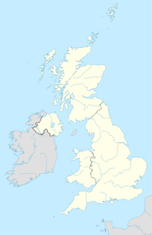
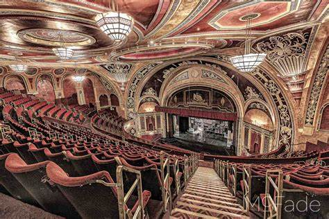
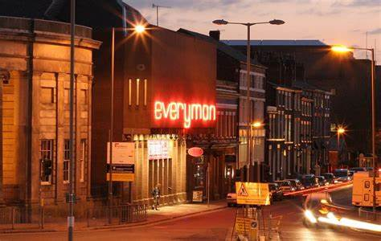
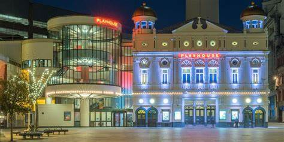
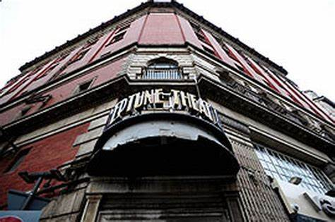
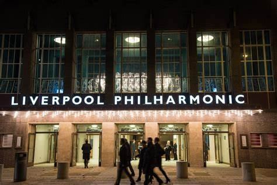
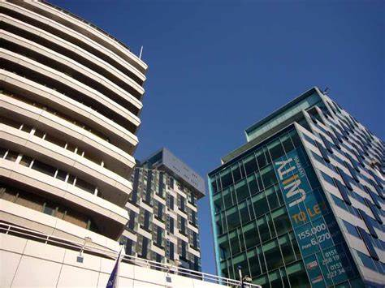

History
Liverpool is a city with a rich history dating back to the 11th century. It was a major port and played a key role in the Industrial Revolution. Today, it is known for its music, football, and cultural attractions.
In 1207, John I (landless) (1199-1216) granted the settlement a charter, thus creating the free royal city of Liverpool. The growth over the next 350 years can not be called fast at all, since in the middle of the 16th century the population was still only 500 people. With the slow but steady commercial growth of the 17th century, the settlement also began to grow. During the English Civil War, several battles for the city took place, including an 18-day siege in 1644. In 1699, a parliamentary act approved Liverpool to establish its own parish. In the same year, the city's first slave ship, the Liverpool Merchant, set off for the coast of Africa. Thanks to trade with the West Indies, Ireland and Europe, the city began to grow. England's first water dock opened in Liverpool in 1715.
Significant income from the slave trade led to the prosperity and rapid growth of the city. By the end of the century, Liverpool dominated 40% of the European slave trade and 80% of the English slave trade.

In the first half of the 19th century, 40% of world trade went through Liverpool, where imposing structures proclaimed the wealth of the city. The population continued to grow strongly, especially in the 1840s, when Irish immigration began, with thousands fleeing the famine-stricken island to the wealthy trading town. By 1851, approximately 25% of the town's population was of Irish descent. In the first half of the 20th century, hundreds of emigrants arrived in Liverpool from all over Europe.
During World War II, in the Battle of England, German bombers attacked Liverpool more than 80 times, killing 2500 people and rendering more than half of the apartment buildings uninhabitable. Since 1952, Liverpool's sister city is the German Cologne, which was also the victim of strong bombing attacks during the world burning. After the war, large-scale reconstruction began, new residential areas grew out of the ground and England's largest dock, the Seaforth Dock, was also completed. In the 1960s, Liverpool became a center of culture. The "Merseybeat" style appeared, which soon became synonymous with the Beatles, but plenty of other Liverpool bands also enhanced the city's reputation. Despite the cultural flourishing, as a result of the economic recession from the 1950s onwards, by the 70s the production of docks and traditional industrial centers had fallen sharply, many jobs were lost. With the advent of containerized transport, most of the docks in Liverpool became obsolete. In the 1980s, unemployment skyrocketed.
The Thatcher administration abandoned the city completely in overcoming the economic crisis and supported Manchester's development plan, further reinforcing the anti-English sentiment of the Liverpudlians, who had Irish and Scottish roots.
In 1974, Liverpool separated from the Earldom of Lancashire (of which it had been the centre until then) and became head of the newly formed Earldom of Merseyside. At the end of the 20th century, the renewal of the city began, which still lasts to this day, since in 2008 Liverpool was the European Capital of Culture. Based on the reputation of the Beatles and other Merseybeat bands of the 60s, tourism has now become one of the main driving forces in Liverpool's economy.
In 2004, a £750 million investment, "Paradise Development", began in the Paradise Street area, which will bring the most impactful changes to the city centre since the post-war reconstructions.
Districts of Liverpool
sort by abc:
Aigburth, Allerton, Anfield
Belle Vale, Broadgreen
Childwall, Clubmoor, Cressington, Croxteth
Dingle
Edge Hill, Everton
Fairfield, Fazakerley
Garston, Gateacre, Grassendale
Hunts Cross
Kensington, Kirkdale, Knotty Ash
Mossley Hill
Netherley, Norris Green
Old Swan
St Michael's Hamlet, Sefton Park, Speke, Stoneycroft
Toxteth, Tuebrook
Walton, Wavertree, West Derby, Woolton
Culture
Liverpool is home to a vibrant culture, with a variety of music, art, and sporting events. The city is also home to two of the most successful football clubs in the world, Liverpool FC and Everton FC.
Liverpool is an internationally known cultural centre, with a particularly rich history of popular music, performing and visual arts.
The city is also well known for the "Liverpool Poems", of which Roger McGough and Adrian Henri are the most famous. And the anthology "The Mersey Sound", written by Henri, McGough and Brian Patten, has sold more than 500 thousand copies since its first publication in 1967.
And in 2003, Liverpool was designated as the European Capital of Culture. From 2004 to 2009, many cultural events were held in the city, the culmination of which was in the year 2008.
Performing arts
One of Liverpool's most famous current orchestras is the Royal Liverpool Philharmonic Orchestra, which holds its concerts in its own home, Philharmonic Hall. Liverpool's particularly strong performing artistic history is evidenced by the numerous theatres in the city:
Empire

Everyman

Liverpool Playhouse

Neptune

Philharmonic Hall

Royal Court
.jpeg)
Unity

Many of these theatres, including Everyman, the Liverpool Playhouse and the Unity Theatre, are economically well-functioning public institutions.
Visual arts
Liverpool has a vibrant art scene. The Walker Art Gallery has a number of pre-Raphaelite paintings on display. Sudley House offers a wide range of pre-20th-century art, while London's Tate Gallery's local museum, the Tate Liverpool Gallery, aims to dazzle guests with its collection of modern art in the north of England.
The UK's largest international arts festival, Liverpool Biennial, is held every two years. The festival usually runs from mid-September to the end of November and is divided into three main sections: the International, the Independent and the Contemporary exhibitions, which follow each other in time, but it is often the case that the end and start dates of the exhibitions overlap. At the 2004 Biennial, Yoko Ono's series of pictures of a completely, titled "My mother is beautiful", caused a storm as many people protested against the images on display on the city's shopping street.
Attractions
There are many popular attractions in Liverpool, including the Royal Albert Dock, the Liverpool Cathedral, and the Beatles Story museum. The city is also home to a number of beautiful parks and gardens, such as Sefton Park and the Chinese Garden of Friendship.
Liverpool is a very rich city architecturally rich, with more than 2500 registered listed buildings, 26 of which are under grade I and 85 are under grade II protection. As a legacy of the lofty spirited creators of the late 18th century, there is an outstandingly high number of non-Anglican buildings in the town of Mersey throughout England, no English city other than Westminster has as many public sculptures as Liverpool, After London, the port city is home to most of England's registered attractions and surprising as it may be, but it has more George-era buildings (I, II, III and IV during the reigns of George IV (1715-1830)) than Bath, known for its houses of this style. Many famous English architects worked in Liverpool, including Peter Ellis, Harvey Lonsdale Elmes, John Foster, Sir Giles Gilbert Scott, Sir Edwin Lutyens and Sir Frederick Gibberd.
Waterfront
In 2004, Liverpool's waterfront skyline was added to the UNESCO World Heritage List, indicating the city's importance in world trade and the development of dock technologies. In 2012, it was classified as an endangered World Heritage Site due to planned developments on the waterfront. By 2021, the investments made had such a negative impact on the overall picture that the site was removed from the World Heritage List.
Docks have always occupied a significant place in Liverpool's history, arguably the best known of them being the Albert Dock: the world's first enclosed, fireproof dock and warehouse complex, and Britain's first building made entirely of cast iron, brick and stone. It was renovated in the 1980s and became the largest Category I protected building complex in England. The old dock buildings housed the Merseyside Maritime Museum, the Liverpool Life Museum and the Tate Liverpool.
Among the docks is the Stanley Dock Tobacco Warehouse, which was the largest building in the world when it was inaugurated in 1901.
Pier Head offers arguably the most spectacular view of Liverpool, with the Three Graces, three of the city's most famous buildings, located behind the pier. The first of these is the Royal Liver Building, built in the early 1900s, with a liver bird (a symbol of Liverpool) on the bronze domes on each of its two towers. The second is the Cunard Building, the former headquarters of the Cunard shipping company. The third building is the Port of Liverpool Building, a former building of Mersey Dock and Harbour Council from which the docks once managed.
Religious buildings
The arrival of thousands of immigrants and sailors to Liverpool led to a strong religious diversity in the city, which remains to this day. As a result, churches of many different faiths can be found in the city, along with two Christian cathedrals.
Churches
Liverpool's parish church, the Church of Our Lady and St Nicholas, known locally as the "Church of the Sailors", has stood on the city's seafront since 1257. It still holds regular Catholic masses. Other notable buildings include the Greek Orthodox Church of St Nicholas, built in 1870 in Byzantine style, and the Gustav Adolfus Kyrka, built in 1883 in the style of the Nordic architecture, which was the church of the Swedish sailors.
Cathedrals
The Cathedral
Thanks to its wealth from trade, Liverpool could afford to build two huge cathedrals at the same time in the early 20th century. The Anglican cathedral was designed by Sir Giles Gilbert Scott - it is still the longest nave, largest organ and loudest bell-ringing cathedral in the world. The Roman Catholic Archbishop's Cathedral was started to Sir Edwin Lutyens' design, but ran out of money after the crypt was completed. After Lutyens' death, Sir Frederick Gibberd redesigned the building and a smaller cathedral than originally planned was eventually built, but it still contains the largest stained glass window in the world. The road between the two cathedrals is called the Way of Hope.
Synagogues
There are several synagogues in Liverpool, but the most famous is undoubtedly the Grade II listed Princes Road Synagogue.
Mosques
Liverpool is home to one of the oldest mosques in England, founded in 1887 by William Abdullah Quilliam, a lawyer and convert to Islam. Today, the Al-Rahma Mosque remains the most important Islamic building in the city.
Other famous buildings
The William Brown Street area is also known as Liverpool's 'Cultural Quarter', as it is home to the William Brown Library, the Walker Art Gallery and the Liverpool World Museum, all housed in three major neo-classical buildings. Not far from them is perhaps the city's most impressive neo-classical building, St George's Hall, originally designed as a concert hall and court building. The Wellington Memorial and the Seble Fountain are also in the vicinity of these buildings.
The beautifully designed interior of the Town Hall, built in 1754, also attracts many visitors.
The University of Liverpool's Victoria Building is red-brick in keeping with the fashion of the day, and is a worthy addition to the 'Red Brick Universities', a group of similar style higher education institutions found throughout England. The most impressive part of the Victoria Building is the clock tower.
Some Liverpool landmarks are famous not so much for their function, but for other reasons. These include the 'Williamson Tunnels', which are considered to be the most overlooked tunnels in the world. And the Philharmonic Dining Rooms, opposite the Philharmonic Hall, are visited by tourists for their ornate Victorian-era side rooms, famous far and wide.
Education
At primary and secondary school level, Liverpool has a wide range of options for pupils, from state-funded secular schools to denominational schools, with Anglican, Jewish and Roman Catholic schools in the city. Islamic religious schools are currently only available at primary level and there is currently no Islamic secondary education in the city. One of Liverpool's oldest schools, The Liverpool Blue Coat School, was founded in 1708 for charitable purposes and is still open to pupils today. The Liverpool College[13] is the city's leading private school, with education from 3 to 18 years old, and annual fees of £7320 in 2005. Also highly rated is the former boarding private boys' grammar school in West Derby, St Edward's College, which has been fully co-educational since 1996. The Mersey City has three higher education institutions with university status, the University of Liverpool, Liverpool John Moores University and Liverpool Hope University. Edge Hill College of Higher Edication, which moved to Ormskirk, Lancashire, in 1931 and was granted university status in April 2006, has college status. Liverpool John Moores University was originally a technical polytechnic, upgraded to university status in 1992. It is named after Sir John Moores, the founder of Littlewoods, a retail chain and football merchandise interest group, who was a shareholder and chairman of Everton FC, while his nephew and heir, David Moores, is the majority owner of Liverpool FC. The Liverpool School of Tropical Medicine, founded to cure specific diseases caught by traders in various places, is now a postgraduate school of the University of Liverpool and one of only two institutions in the world to have amassed vast stocks of anti-viruses. The Liverpool Institute for Performing Arts was founded by Sir Paul McCartney in 1996 to train artists and arts technicians.
Public Transport
Across the Mersey
Liverpool is linked to the other side by three tunnels under the Mersey, one of which, the Mersey Railway Tunnel, is a railway tunnel, while the other two, the Queensway Tunnel and the Kingsway Tunnel, are road tunnels.
In addition, there is still a regular ferry service (the Mersey Ferry) between Liverpool and Wirral (the area between the rivers Dee and Mersey), much to the delight of tourists. The ferries were made world famous by the band Gerry and the Pacemakers with their song Ferry Cross the Mersey, which is now played on all ferries when they dock in Liverpool at the end of a sightseeing tour.
A bridge spanning the Mersey, linking Liverpool to Runcorn, is the Silver Jubilee Bridge, but colloquially known simply as the 'Runcorn Bridge'.
Airport
In 2001, the airport in the Speke district of south Liverpool was renamed John Lennon Airport in tribute to one of the city's most famous figures, the former Beatles member. The airport's logo is a caricature of Lennon himself, with a line from their song Imagine below it, and the airport's motto: "Above us only sky". The airport was one of the most frequent departure points for Beatles tours, and the footage of the singers boarding the planes made the airport famous around the world.
Port
The port is still one of Liverpool's busiest public transport hubs, with over 700,000 passengers using the facility in 2002, most of them of course heading to the most popular destinations, the Isle of Man and Ireland. The Liverpool-Dublin route is not only popular with tourists, Liverpool's young people are also keen to head over to the Irish capital for an afternoon or evening of partying.
By train
Rail services around Liverpool are operated by the local Merseyrail railway company, which holds the rights to operate rail services in the Liverpool area until 2028. Outside London, the Merseyrail route is one of the busiest in England, carrying 100,000 passengers a day. The lines run almost entirely underground within the city. There are two main routes out of Liverpool, the Northern Line, which runs to Southport, Ormskirk, Kirkby and Hunts Cross, and the Wirral Line, which crosses the river via the Mersey Railway Tunnel to West Kirby, New Brighton, Ellesmere Port and Chester.
The city's main long-distance train station is Lime Street Station. It is the departure point for services to London, Manchester, Birmingham, Preston, Leeds, Sheffield, Nottingham, Norwich and other destinations.
Past
In the old days, Liverpool was served by an extensive tram network, providing easy and fast public transport around the city, but services were discontinued in the 1950s and the lines were dismantled. From 1893, the elevated railway carried passengers to the docks, but unlike other railways in the country, this line was left out of the 1948 nationalisation, with the last train to run on the elevated line rolling out in 1956. Several local rail services, such as the Canada Dock Branch between Edge Hill and Kirkdale, no longer carry passengers, surviving solely on freight, while others, such as the North Liverpool Extension, have simply been dismantled.
Future
In 2001, a decision was taken to rebuild the tram network, with the first line of the Merseytram planned to be opened in 2008, the Year of Culture. After the central government reduced the amount of subsidies previously promised, the tram line project was cancelled in November 2005.
Media
As Liverpool does not have a local branch of the national television companies, the city is severely under-represented in the media compared to other cities of similar size in the country. ITV's regional division, which covers the Liverpool area, is ITV Granada, which is based in Manchester, although in the 1980s and 1990s the regional news programmes were produced in Liverpool.[14] The BBC's regional studio is also based in Manchester. Manchester's perceived influence on the regional media is a perennial source of controversy for locals. ITV's daily magazine This Morning was broadcast from the Albert Dock until 1996, when the programme's editorial team moved to London. Granada's short-lived shopping channel, shop!, was based in Liverpool, but was closed in 2002. Liverpool is the home of locally-owned Mersey Television, which was the producer of the recently ended soap opera Brookside. It currently produces Hollyoaks for Channel 4 and Grange Hill for the BBC. Mersey Television is owned by All3Media. The City, on the other hand, is better off with other types of media. There are two local newspapers, the Daily Post, both published by the Trinity Mirror group, and the Echo. The Daily Post covers a slightly larger area, including North Wales. There are four radio stations of local interest, BBC Radio Merseyside, Juice FM, Radio City and Magic 1548, the latter two sharing a studio in St John's radio tower, which dominates the skyline of the city along with the two cathedrals. The independent media organisation Indymedia also has a Liverpool branch. The city has also featured in several films.
Economy
Around the turn of the millennium, the city's economy began to recover steadily from a long decline since the Second World War. Between 1995 and 2001, the city's GVA (gross value added) per capita grew by 6.3%, compared with 5.8% in London and 5.7% in Bristol. The rate of job growth was 9.2%, compared with the national average of 4.9% over the period 1998-2002. As in the rest of the country, there has been significant growth in the service-based industry, with several major call centres being established. The port's traffic will continue to exceed expectations for a long time to come, thanks to the development of new telecommunications infrastructure. With the advent of new media, the city has made significant progress in the development of computer games. Tourism is already an important factor in Liverpool's economy, but it is expected to be a particular highlight in 2008 when Liverpool becomes European Capital of Culture. This has led to rapid growth in the hospitality industry, with new high quality hotels, restaurants and clubs being built. The city's buildings attract not only tourists but also film-makers, thanks to its diversity, with Liverpool often being used as a doppelganger for cities around the world. Liverpool is now the second most filmed city in England after London.
Football
Liverpool FC
Liverpool Football Club is a professional football club based in Liverpool, England. The club competes in the Premier League, the top tier of English football. Founded in 1892, the club joined the Football League the following year and has played its home games at Anfield since its formation. Domestically, the club has won nineteen League titles, eight FA Cups, a record nine League Cups and sixteen FA Community Shields. In international competitions, the club has won six European Cups, three UEFA Cups, four UEFA Super Cups—all English records—and one FIFA Club World Cup. The club established itself as a major force in domestic and European football in the 1970s and 1980s, when Bill Shankly, Bob Paisley, Joe Fagan and Kenny Dalglish, led the club to a combined eleven League titles and four European Cups. Liverpool won two further European Cups in 2005 and 2019 under the management of Rafael Benítez and Jürgen Klopp, respectively; the latter led Liverpool to a nineteenth League title in 2020, the club's first during the Premier League era. Liverpool is one of the most valuable and widely supported clubs in the world. The club has long-standing rivalries with Manchester United and Everton. Under management by Shankly, in 1964 the team changed from red shirts and white shorts to an all-red home strip which has been used ever since. The club's anthem is "You'll Never Walk Alone". The club's supporters have been involved in two major tragedies. The Heysel Stadium disaster, where escaping fans were pressed against a collapsing wall at the 1985 European Cup Final in Brussels, resulted in 39 deaths. Most of these were Italians and Juventus fans. Liverpool were given a six-year ban from European competition, with all other English clubs received a five-year ban. The Hillsborough disaster in 1989, where 97 Liverpool supporters died in a crush against perimeter fencing, led to the elimination of fenced standing terraces in favour of all-seater stadiums in the top two tiers of English football. Prolonged campaigning for justice saw further coroners inquests, commissions and independent panels that ultimately exonerated the fans.
Everton FC
Everton Football Club is an English football club founded in Liverpool in 1878. The team is currently in the Premier League and has spent more seasons in the top flight than any other English club in its history. They are considered to be one of the five most successful English teams, having won the league nine times, the FA Cup five times and the CEC once. The last time they won a trophy was in 1995, the FA Cup. Everton were founded in 1878, and their biggest rivals are, of course, Liverpool, the city's other professional team. Their clashes are known as the Merseyside derby. In 2006, the management announced plans to build a new, larger stadium. The Stolverkos have a large fan base, with an average of 90% of maximum capacity being used in the 2005/06 season. Many well-known players have turned up at Everton. The most famous of all is Dixie Dean, who played at Goodison Park in the 1920s and 1930s and set a living goalscoring record by scoring 60 goals in a season.